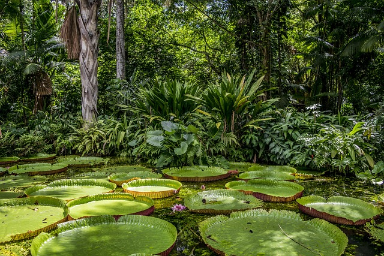
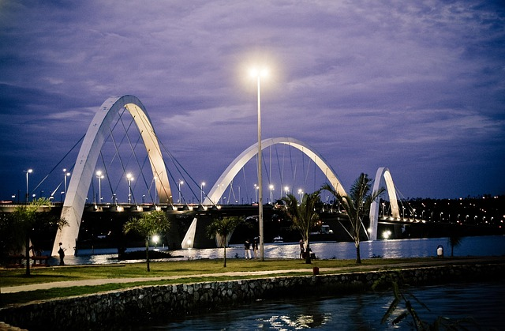
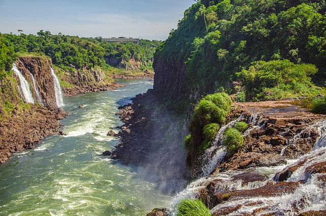
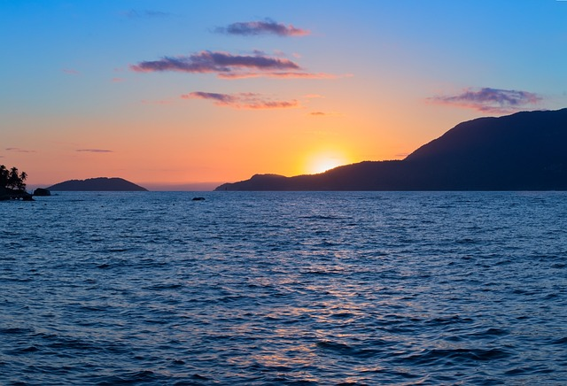

Acesso a topo
Página inicial
Vídeo tranquilizante
tebela
Amazônia

A Amazônia e os pantanais do Brasil são dois dos ecossistemas mais ricos e importantes do país. A Amazônia, maior floresta tropical do mundo, abriga uma biodiversidade incomparável e desempenha papel essencial na regulação do clima global. Já o Pantanal, considerado a maior planície alagável do planeta, localiza-se principalmente nos estados de Mato Grosso e Mato Grosso do Sul, e é conhecido por sua vasta variedade de aves, peixes e mamíferos. Ambos os biomas são fundamentais para o equilíbrio ambiental e enfrentam ameaças como o desmatamento, queimadas e a expansão agropecuária.
Brasília

Brasília, a capital do Brasil, foi inaugurada em 1960 e é famosa por sua arquitetura moderna e planejada. Projetada pelo urbanista Lúcio Costa e pelo arquiteto Oscar Niemeyer, a cidade foi construída com o objetivo de integrar o interior ao restante do país. Suas construções se destacam pelo uso inovador do concreto e pelas formas arrojadas, como é o caso da Catedral Metropolitana, do Congresso Nacional e do Palácio da Alvorada. Brasília é considerada um marco do modernismo e foi tombada como Patrimônio Cultural da Humanidade pela UNESCO.
Cataratas e cachoeiras

O Brasil é rico em cataratas e cachoeiras, que encantam pela beleza e grandiosidade. Entre as mais famosas estão as Cataratas do Iguaçu, localizadas na fronteira com a Argentina, no estado do Paraná, consideradas uma das sete maravilhas naturais do mundo. Além delas, o país abriga inúmeras outras quedas d’água impressionantes, como a Cachoeira da Fumaça, na Chapada Diamantina (BA), e a Cachoeira do Caracol, em Canela (RS). Esses cenários naturais não só atraem turistas do mundo todo, como também representam importantes áreas de preservação ambiental e biodiversidade.
Mar

O território marítimo do Brasil, conhecido como Amazônia Azul, corresponde à área do mar sob jurisdição brasileira e se estende por aproximadamente 4,5 milhões de quilômetros quadrados. Essa zona inclui o mar territorial, a zona contígua, a zona econômica exclusiva (ZEE) e a plataforma continental, conforme estabelecido pela Convenção das Nações Unidas sobre o Direito do Mar. Rica em biodiversidade, recursos minerais e energéticos, como o petróleo do pré-sal, essa vasta área é estratégica para a economia, a segurança e a soberania nacional.
Rio de Janeiro
O Rio de Janeiro é uma das cidades mais conhecidas e admiradas do Brasil, famosa por suas paisagens deslumbrantes que combinam mar, montanhas e florestas. Entre seus ícones mais famosos estão o Cristo Redentor, o Pão de Açúcar e as praias de Copacabana e Ipanema. A cidade também é reconhecida por seu animado carnaval, com desfiles de escolas de samba que atraem visitantes do mundo inteiro. Além da beleza natural, o Rio tem grande importância histórica e cultural, sendo um dos principais centros turísticos e culturais do país.
Acesse o topo da página